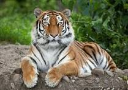

Introduction
Tigers, scientifically known as Panthera tigris, are among the most iconic and endangered wild cats on Earth. As apex predators, they play a crucial role in maintaining the ecological balance of forests. India, with its rich biodiversity, is home to a significant population of tigers, especially the famous Bengal Tiger. Let's explore the different tiger species and understand the importance of conserving them.
Types of Tigers
- Bengal Tiger (Panthera tigris tigris): Found predominantly in India, it is the most numerous tiger subspecies.
- Siberian Tiger (Panthera tigris altaica): Inhabits the Russian Far East; largest of all tiger subspecies.
- Indochinese Tiger (Panthera tigris corbetti): Native to Southeast Asia; smaller and darker than Bengal tigers.
- Malayan Tiger (Panthera tigris jacksoni): Resides in the southern part of the Malay Peninsula.
- South China Tiger (Panthera tigris amoyensis): Critically endangered; possibly extinct in the wild.
- Sumatran Tiger (Panthera tigris sumatrae): The smallest living tiger subspecies, found in Indonesia.
Introduction
Tigers, the largest of all big cats, are an integral part of our ecological heritage. Scientifically classified as Panthera tigris, they once roamed across vast areas in Asia. Today, due to habitat loss and poaching, their numbers have drastically reduced, and only a few subspecies survive. Let’s explore all the recognized subspecies of tigers that once roamed or still roam the Earth.
1. Bengal Tiger (Panthera tigris tigris)
The Bengal Tiger is the most populous of all tiger subspecies and is primarily found in India, with smaller populations in Bangladesh, Bhutan, and Nepal. Known for its vibrant orange coat with black stripes, this majestic predator is the national animal of India. Bengal Tigers adapt well to varied habitats, including tropical forests, mangroves (like the Sundarbans), and grasslands.
2. Siberian Tiger (Panthera tigris altaica)
Also known as the Amur Tiger, the Siberian Tiger is the largest living tiger subspecies. Native to the Russian Far East, it has adapted to survive in extreme cold conditions. Its fur is paler and thicker, and it has fewer stripes compared to its southern cousins. Conservation efforts in Russia have helped stabilize its declining population.
3. Indochinese Tiger (Panthera tigris corbetti)
The Indochinese Tiger inhabits the forests of Southeast Asia, including countries like Thailand, Cambodia, and Vietnam. It is smaller and darker than the Bengal Tiger, with narrower stripes. Due to political instability and poaching, its numbers have declined sharply in recent years.
4. Malayan Tiger (Panthera tigris jacksoni)
Native to the southern part of the Malay Peninsula, the Malayan Tiger was only recognized as a separate subspecies in 2004. It is critically endangered, with fewer than 200 individuals remaining in the wild. Conservationists are working intensively to prevent its extinction.
5. South China Tiger (Panthera tigris amoyensis)
Once widespread across southern China, the South China Tiger is now functionally extinct in the wild. Only a few individuals exist in captivity. It is the most critically endangered tiger subspecies, and intensive captive breeding programs are attempting to save it from total extinction.
6. Sumatran Tiger (Panthera tigris sumatrae)
Endemic to the Indonesian island of Sumatra, the Sumatran Tiger is the smallest surviving subspecies. It has thicker black stripes and a darker coat, which help it blend into the dense forests of the island. Fewer than 400 individuals are estimated to exist in the wild, making it critically endangered.
Extinct Subspecies
Sadly, several tiger subspecies have already gone extinct due to human activities. These include:
- Caspian Tiger: Extinct since the 1970s, once found around the Caspian Sea.
- Bali Tiger: Native to the Indonesian island of Bali; extinct by the 1940s.
- Javan Tiger: Disappeared from Java, Indonesia by the 1980s.
Classification of Tigers in India
India is home to the world’s largest population of wild tigers. The classification of tigers within India is not only based on subspecies (primarily Bengal Tiger), but also on geographical regions, habitat types, and conservation landscapes. Here's how tigers are classified across the Indian landscape:
üó∫Ô∏è Habitat-Based Classification
- Shivalik Hills & Gangetic Plains: Includes reserves like Corbett and Dudhwa (Uttarakhand, Uttar Pradesh).
- Central Indian Highlands: Kanha, Pench, Bandhavgarh (Madhya Pradesh, Chhattisgarh, Maharashtra).
- Eastern Ghats: Nagarjunsagar-Srisailam (Andhra Pradesh), Satkosia (Odisha).
- Western Ghats: Bandipur, Nagarhole, Periyar, Wayanad (Karnataka, Kerala, Tamil Nadu).
- Sunderbans Delta: World's only mangrove tiger habitat, spread across West Bengal and Bangladesh.
- Northeast Hills: Kaziranga, Manas, Namdapha (Assam, Arunachal Pradesh).
üìä State-wise Tiger Presence (2022 Census)
| State | Approx. Number of Tigers | Major Reserves |
|---|---|---|
| Madhya Pradesh | 526 | Kanha, Bandhavgarh, Pench |
| Karnataka | 524 | Bandipur, Nagarhole |
| Uttarakhand | 442 | Corbett, Rajaji |
| Maharashtra | 312 | Tadoba, Melghat |
| Tamil Nadu | 264 | Sathyamangalam, Mudumalai |
| Assam | 190 | Kaziranga, Manas |
| West Bengal | 88 | Sundarbans |
üêÖ Project Tiger
Launched in 1973, Project Tiger is a flagship conservation program by the Government of India aimed at ensuring a viable population of Bengal tigers in their natural habitats. The project began with 9 tiger reserves and has now expanded to over 50 reserves across India. It focuses on habitat improvement, anti-poaching strategies, and community involvement.
Conclusion
Tigers are not just symbols of strength and grace; they are vital for the health of the ecosystems they inhabit. Each subspecies has adapted uniquely to its environment, but all face serious threats due to human encroachment, deforestation, and illegal wildlife trade. Conservation efforts are critical, and it is our responsibility to protect and preserve these magnificent creatures for future generations.
The Bengal Tiger
The Bengal Tiger, India's national animal, is a symbol of strength, power, and wilderness. These magnificent creatures have a rich orange coat with black stripes and a white underside. Adult males can weigh up to 220 kg and measure around 10 feet in length, including the tail.
Habitat and Distribution
Bengal Tigers are highly adaptable and can be found in a variety of habitats, including tropical and subtropical forests, mangroves (like Sundarbans), grasslands, and dry deciduous forests. They are solitary and territorial animals, needing large areas to hunt and breed.
State-wise Presence in India
- Madhya Pradesh: Known as the "Tiger State" with reserves like Kanha, Bandhavgarh, and Pench.
- Karnataka: Houses tiger reserves such as Bandipur and Nagarhole.
- Uttarakhand: Corbett National Park is a major habitat.
- Maharashtra: Tadoba Andhari Tiger Reserve is a notable area.
- West Bengal: The Sundarbans, a UNESCO World Heritage Site, is home to unique mangrove-adapted tigers.
- Chhattisgarh, Assam, Tamil Nadu, Bihar, Odisha: Also support small but crucial populations of tigers.
Project Tiger
Launched in 1973, Project Tiger is one of the most ambitious conservation programs by the Government of India. Its goal is to ensure a viable population of Bengal Tigers in their natural habitats while protecting them from extinction. The program started with 9 reserves and has grown to over 50 reserves today under the National Tiger Conservation Authority (NTCA). It includes habitat management, anti-poaching strategies, monitoring using technology, and community participation.
Conservation Challenges
Despite government efforts, Bengal Tigers face several threats: habitat loss, poaching, human-wildlife conflict, and climate change, especially in coastal ecosystems like the Sundarbans. Conservationists emphasize a scientific, participatory approach involving local communities for long-term success.
Conclusion
The Bengal Tiger is not just a predator; it is a protector of the ecosystem it inhabits. Its presence ensures the survival of countless other species. Preserving tigers is preserving nature. With continued support, awareness, and responsible policies, India can proudly sustain its tiger population for generations to come.